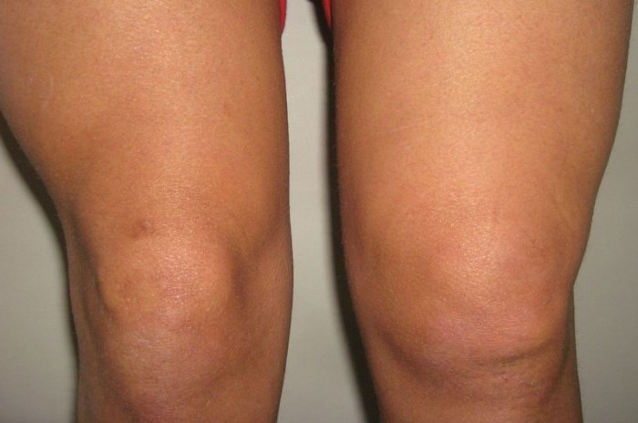

¡Usted tiene la artritis diagnosticada – no se apresure operarse!
¡Es mi historia sobre el cómo me deshice por completo de la inflamación de las articulaciones en las piernas en medio año!
Un prólogo pequeño. Tengo 58 años, y los últimos 20 años tenía las articulaciones de las rodillas hinchadas, porque padecía artritis reumatoide. Si alguien no entiende – es la inflamación de las articulaciones.
Antes se podía soportar, pero ultimamente empezó a doler al andar, sobre todo dolía la rodilla derecha, cualquier actividad física – el camino al trabajo y el andar allí, el trabajo en la huerta, incluso el desplazamiento por la casa se convertieron en un problema.
Visité al podólogo. Hizo algún masaje muy doloroso, simplemente grité por el dolor, no logre soportar y hasta no acabé la sesión. Y claro que rechacé 10 sesiones más. Entonces el dijo: solamente la operación. La operación – NO categoricamente. Por mi estado de la salud (tengo la diabetes) todo se me cicatriza muy mal.
Probé todo, todas las recetas de la medicina naturista, comenzando desde el restregamiento con el ajo, baños para los pies y la gimnasia hasta aplicar la urina. No puedo decir que algo me ayudó bien.
La solución se encontró de repente
La amiga de mi hija me aconsejó comprar la crema "", ya que su mama la usa y está muy contenta. El problema no podía esperar, por eso en seguida pedí dos cajas sin pensar, y en cuanto llegó el envío apliqué la crema sobre mis rodillas.
Un par de palabras sobre la crema. Se utiliza contra la destrucción de las articulaciones. La composición es completamente natural. Contiene todas las sustancias necesarios para la salud de las articulaciones. Hay que aplicarla en casos de la osteoartrosis, osteocondrosis, artrosis, radiculitis y otras enfermedades del aparato locomotor.
Primero lo aplicaba día de por medio, luego empecé a aplicar constantamente, varias veces al día, y obligatoriamente antes de dormir. Aunque en las insrucciones ponga que el efecto se consigue en 2 días de uso ya.
Literalmente en una semana dejaron de doler las articualciones de las rodillas POR COMPLETO. Es inefable, que alegría y felicidad sentí en aquel momento.
También en 7-10 días desapareció la rubefacción en el campo de las articulaciones, se desminuyó la edematización. Volví a poder andar sin cojear – y me sentí alegre de nuevo.
En un mes
Estoy aplicando la crema sobre las rodillas 3 veces al día durante un mes ya. Los juantes en las rodillas se redujeron a la mitad casi, hasta logré correr y hacer los ejercicios físicos, para desarrollar las articulaciones. En general, todo se mejoró mucho, y volví a tener la vida de pleno valor.
Dónde la compré
Es posible que Usted sufre por el mismo problema. Logré curar mis rodillas enfermas de verdad, por eso apareció este blog. Si Usted necesita los detalles, es aquí dónde compré la crema.
Me gustó que aquí se puede hacer el pedido hasta si Usted nunca ha comprado en internet, y entregaron rápido, sin engaño. Es posible que Usted haya utilizado la crema "" ya, entonces, ecriba los comentarios.